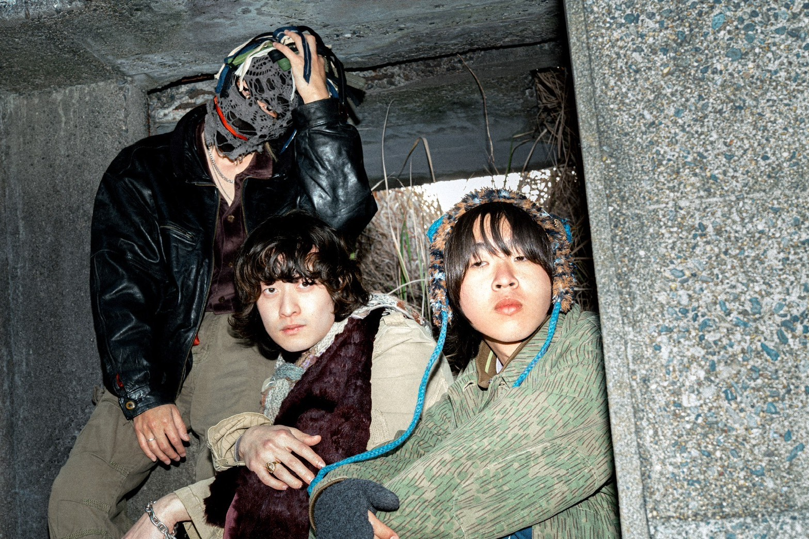
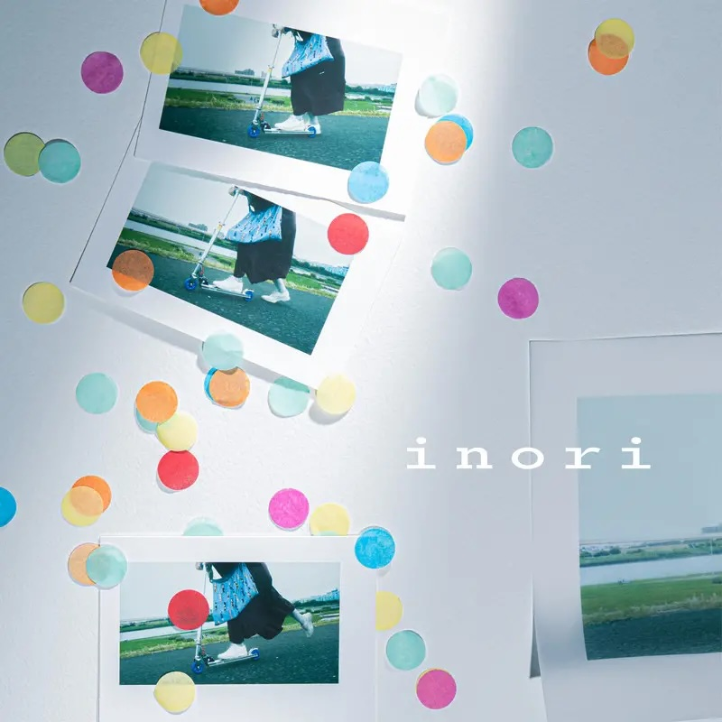
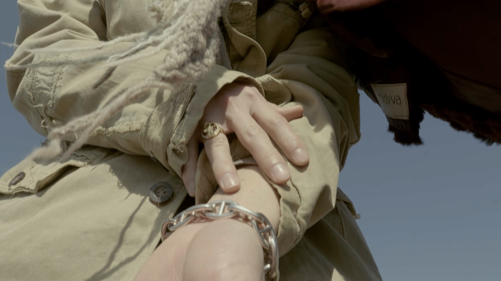

interview
佐藤颯(S級任務) — 「かっこいい音楽はかっこいい場所からしか生まれない」

自己紹介をお願いします。
S級任務で作詞作曲、ボーカルを務めている佐藤颯（サトウハヤテ)です。OOPArtsarts.というクリエイティブチームの代表もやっております。
音楽を始めたきっかけがあれば、教えてください。
幼少期の頃から、ピアノを独学で弾いていました。本格的に音楽を意識するようになったのは、15歳の頃です。海外アーティストのライブを実際に観たことが大きなきっかけになって、「自分も音楽をやりたい」と強く思うようになりました。
そこから本格的に音楽の道を志すようになり、クラシック音楽を専門的に学べる高校へ進学しました。独学で続けてきたピアノを土台に、音楽についてより深く学び始めたことが、現在の活動にもつながっています。
そこから本格的に音楽の道を志すようになり、クラシック音楽を専門的に学べる高校へ進学しました。独学で続けてきたピアノを土台に、音楽についてより深く学び始めたことが、現在の活動にもつながっています。
直近のリリースについて教えて下さい。
直近のリリースは、S級任務のセカンドシングル『祈り』です。

▷ Listen『祈り』は、言葉にできない感情や、もう届かなくなってしまった想いをテーマにした楽曲です。もう会うことのできない人に対して、それでも何かを願い続ける気持ちを「祈り」という言葉に込めています。楽曲では、感情を直接的に説明しすぎず、聴く人それぞれの記憶や経験を重ねられるような余白を大切にしました。音の面でも、歌詞の持つ切なさだけに寄りすぎず、バンドとしてのグルーヴやダイナミクスを意識しています。
自分たちにとって『祈り』は、ただ悲しい別れを歌った曲ではなく、過去に残された想いを抱えながら、それでも前に進んでいくための曲です。聴いてくれた人自身の「誰か」や「何か」を思い出してもらえたら嬉しいです。
自分たちにとって『祈り』は、ただ悲しい別れを歌った曲ではなく、過去に残された想いを抱えながら、それでも前に進んでいくための曲です。聴いてくれた人自身の「誰か」や「何か」を思い出してもらえたら嬉しいです。
服やジュエリーなど、「これは自分を語るうえで外せない」と思うモノがあれば教えてください。
自分にとって特別なのは、HERMÈSのシェーヌ・ダンクルと、馬をモチーフにしたリングです。どちらも母親から譲り受けたもので、単なるジュエリーではなく、自分にとってとても大切な意味を持っています。
普段から身につけるというより、ライブや人生の中で「ここは大事だ」と思う場面で身につけています。身につけると、不思議と気持ちが引き締まって、「大丈夫、自分ならやれる」と思わせてくれるんです。
母親から受け継いだものだからこそ、そこには物以上の価値があると思っています。大事な場面で身につけることで、背中を押してもらっているような感覚があります。
これから先も大切に使い続けて、自分にとっても、いつか誰かに受け継いでいけるようなものにしていきたいです。
普段から身につけるというより、ライブや人生の中で「ここは大事だ」と思う場面で身につけています。身につけると、不思議と気持ちが引き締まって、「大丈夫、自分ならやれる」と思わせてくれるんです。
母親から受け継いだものだからこそ、そこには物以上の価値があると思っています。大事な場面で身につけることで、背中を押してもらっているような感覚があります。
これから先も大切に使い続けて、自分にとっても、いつか誰かに受け継いでいけるようなものにしていきたいです。

「この人に会えてなかったら今の自分はいない」と思える人を教えてください。
僕の人生を変えてくれたのは、【yell0w・イエロー大阪心斎橋校】の代表であるikemoto toru大先生です。僕が音楽を本気で始めるきっかけになった人物です。イエローの教室に体験レッスンに行ったときに、はじめて教えてもらったのは、生き方そのものでした。まるで、ikemoto toru先生と話していると、自己啓発の本に迷い込んだような気持ちになります。
そんな先生の今でも忘れないかっこいい名言があります。それは、かっこいい音楽はかっこいい場所からしか生まれないという言葉でした。
ikemoto toru先生から学んだ僕が大事にしている事は、音楽ができるということは、大したことではない、人に何かしらの『希望』を与えれるような音楽が作りたいと思えるようになった気持ちそのものでした。もちろん音楽的技術も沢山の学びをいただきました。もしこの記事を読んでいるなら、伝えたいです。本当にありがとう。これからもよろしくお願いいたします。
そんな先生の今でも忘れないかっこいい名言があります。それは、かっこいい音楽はかっこいい場所からしか生まれないという言葉でした。
ikemoto toru先生から学んだ僕が大事にしている事は、音楽ができるということは、大したことではない、人に何かしらの『希望』を与えれるような音楽が作りたいと思えるようになった気持ちそのものでした。もちろん音楽的技術も沢山の学びをいただきました。もしこの記事を読んでいるなら、伝えたいです。本当にありがとう。これからもよろしくお願いいたします。
今後の目標や告知はありますか？
今後の目標は、次の世代に受け継がれていくような音楽を制作し続けることです。
おしらせ
LOVE SPREADS supported by Eggs に出演させていただきます。
詳細はS級任務のSNSをチェック!!
2026.10.8(木)
@下北沢 THREE
詳細 : https://eggs.mu/community/article/xx1s44knr0
詳細はS級任務のSNSをチェック!!
2026.10.8(木)
@下北沢 THREE
詳細 : https://eggs.mu/community/article/xx1s44knr0
S級任務